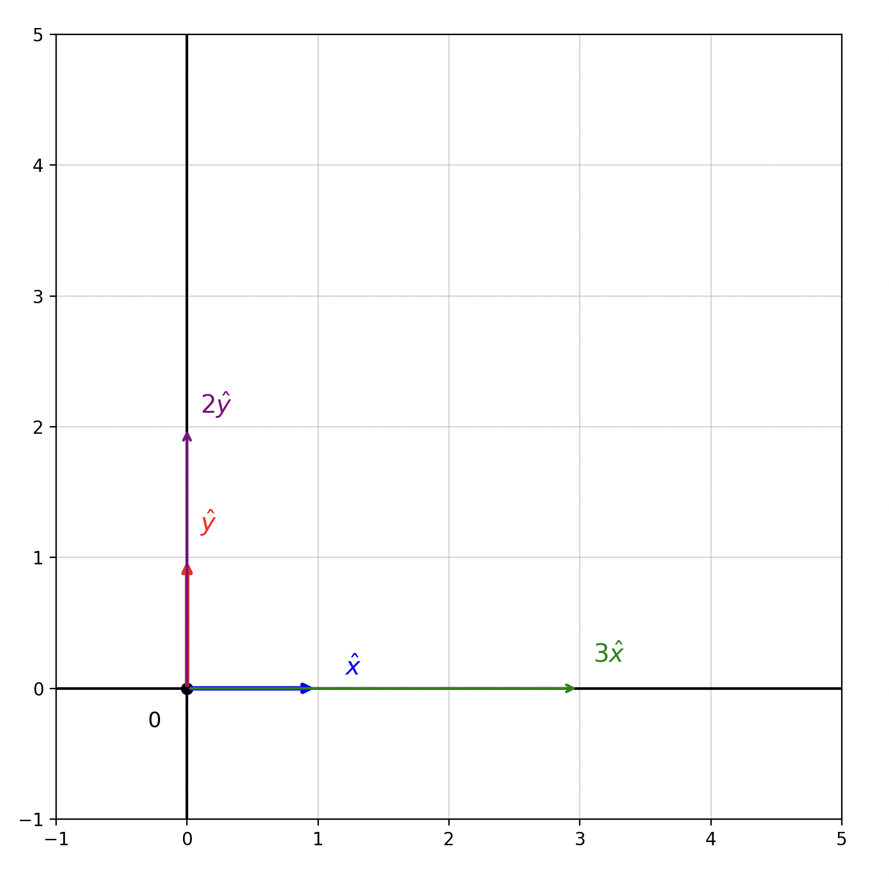
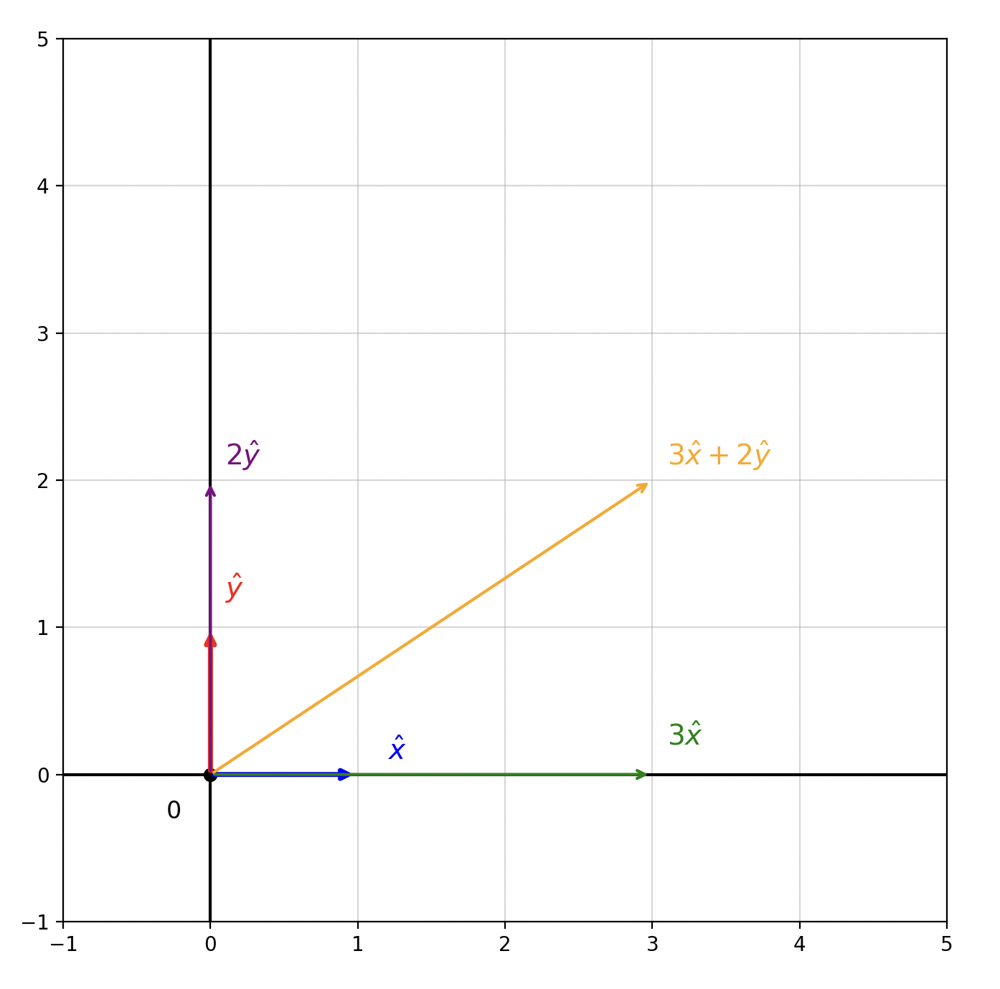

Section 1: Vectors and Linear Combinations
Unit Vectors as a Basis
In 2D space, we can represent any vector using two orthogonal (perpendicular) unit vectors: x and y.

Figure 1: Unit vectors of the xy-plane
We can multiply scalars by these unit vectors and add those scaled vectors together to create any vector in the xy-plane. This concept is called linear combinations of vectors.
Figure 2: Scalars of the unit vectors
Figure 3: Linear combination of scaled unit vectors
These unit vectors in the xy-plane are also orthogonal, meaning they are geometrically perpendicular to each other. This means you cannot create the x unit vector from the y unit vector and vice versa. A synonym for orthogonal is linearly independent.
The same principles apply to functions! Atomic orbitals (like s and p orbitals) act as basis functions, just like x and y act as basis vectors. The s and p orbitals are orthogonal to each other in the 3D plane.
The connection: Just as we write vectors as linear combinations of x and y unit vectors, we can write molecular orbitals as linear combinations of atomic orbitals (LCAO).